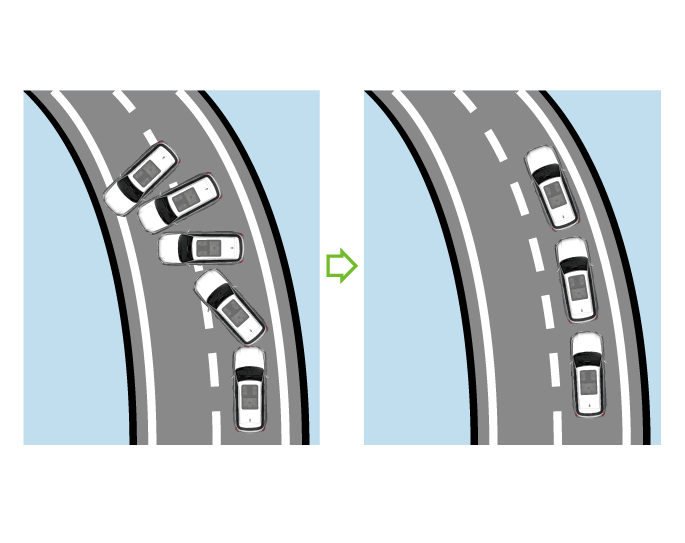
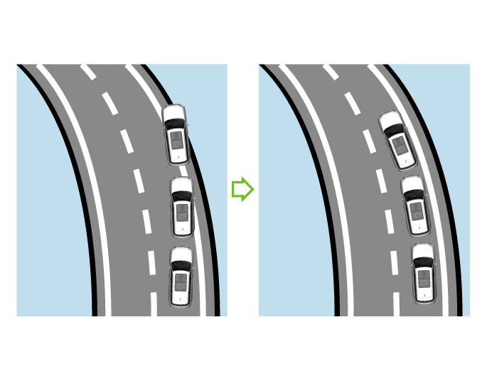

–若车辆趋于过度转向（即甩尾），ESP系统主要对弯道外侧前轮施加制动。
6.3 行车电子制动系统
6.3.1 车身电子稳定系统（ESP）
车身电子稳定系统（ESP），可有效降低车辆侧滑的危险。
ESP系统根据方向盘转角和车速等信息确定驾驶员的驾驶意图，并持续与车辆实际行驶状况进行比较。若车辆偏离正常行驶路线（例如，车辆发生侧滑），ESP通过对相应车轮施加制动力进行修正。
ESP通过制动产生的扭转力使车辆恢复到稳定行驶状态。


–若车辆趋于转向不足（即转弯半径过大），则ESP系统主要对弯道内侧后轮施加制动。
–没有配备ESP的车辆行驶时侧滑偏离正常行驶路线，配备有ESP的车辆行驶时可根据侧滑量修正制动力，防止偏离路线。
开启和关闭

整车电源处于“ON”挡时，进入音响系统界面，点击进入驾控面板按键进入驾控面板中的“车身稳定系统”可开启或关闭ESP系统。车辆行驶时默认ESP为开启状态。
第一次按下“车身稳定系统”软按键，音响系统界面显示提示“确认关闭TCS”，点击“确定”，关闭TCS；再次按下“车身稳定系统”软按键，音响系统界面显示提示“确认完全关闭ESP”，点击“确定”，关闭ESP，车辆稳定性辅助系统关闭（ESPOFF)指示灯点亮；再次按下“车身稳定系统”软按键，车辆稳定性辅助系统开启。
车辆运转时ESP电子稳定系统才起作用，为了行车安全，应开启电子稳定系统ESP。下列特殊情况时，可解除ESP功能：
– 车辆装防滑链行驶。
– 在深雪或松软等路面上行驶。
– 陷于泥泞路等路面，需前后移动。
注意
+
对车辆的不当作业或改装（如:对制动系统、或车轮和轮胎性能的部件的改装）均会影响ESP电子稳定系统的功能。
警告
+
–务必根据气候、道路及交通状况调整车速，切勿利用系统提供的额外安全功能冒险，谨防发生事故。
–ESP不能超越道路附着力的物理极限，在湿滑路面上行驶或牵引挂车行驶时尤须谨慎。
–驾驶员务必根据道路和交通状况随时调整驾驶方式。
–ESP不能降低因车速过高或距前车过近等不当驾驶方式可能引发的事故。
牵引力控制系统（TCS）
TCS牵引力控制系统即循迹控制系统，是根据驱动轮的转数及传动轮的转数来判定驱动轮是否发生打滑现象，当前者大于后者时，进而抑制驱动轮转速的一种防滑控制系统。车辆在光滑路面制动时，车轮会打滑，甚至使方向失控。同样，车辆在起步或急加速时，驱动轮也有可能打滑，在冰雪等光滑路面上还会使方向失控而出现危险。牵引力控制系统的作用是，在车辆加速时自动地控制驱动力，以便使轮胎的滑动量处于合理的范围之内，从而保持车辆行驶的稳定性。
— 页面到底了 —